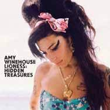

Discografía
Frank es el primer álbum de la cantante británica Amy Winehouse lanzado por Island Records en octubre de 2003 en el Reino Unido y en Estados Unidos el 20 de noviembre de 2007. Recibió dos nominaciones para los Brit Awards y fue preseleccionada para un Mercury Music Prize.
Back to Black es el segundo y último álbum de estudio. Su lanzamiento principal fue realizado el 4 de octubre de 2006 en el Reino Unido.
Back to Black
| CANCIONES |

|
1. Rehab |
2. You Know I'm No Good |
3. Me & Mr Jones |
| 4. Just Friends |
5. Back to Black |
6. Love Is a Losing Game |
| 7. Tears Dry on Their Own |
8. Wake Up Alone |
9. Some Unholy War |
| 10. He Can Only Hold Her |
11. Addicted |
Lioness: Hidden Treasures es el primer álbum recopilatorio y primer álbum póstumo de la cantante Amy Winehouse, lanzado el 5 de diciembre de 2011. El lanzamiento se dio a conocer el 31 de octubre de 2011 a través de The Sun y la página oficial de Amy Winehouse. El álbum es una recopilación de grabaciones de antes del lanzamiento del álbum debut de Winehouse, Frank en 2003, y la música que estaba grabando en el año 2011. Los productores Salaam Remi y Mark Ronson colaboraron juntos, la compilación del álbum con el consentimiento de la familia Winehouse.
Lioness: Hidden Treasures
| CANCIONES |
| 1. Our Day Will Come |
2. Between the Cheats |
3. Tears Dry |

|
| 4. Will You Still Love Me Tomorrow? |
5. Like Smoke |
6. Valerie |
| 7. The Girl from Ipanema |
8. Half Time |
9. Wake Up Alone |
| 10. Best Friends, Right? |
11. Body and Soul |
12. A Song for You |